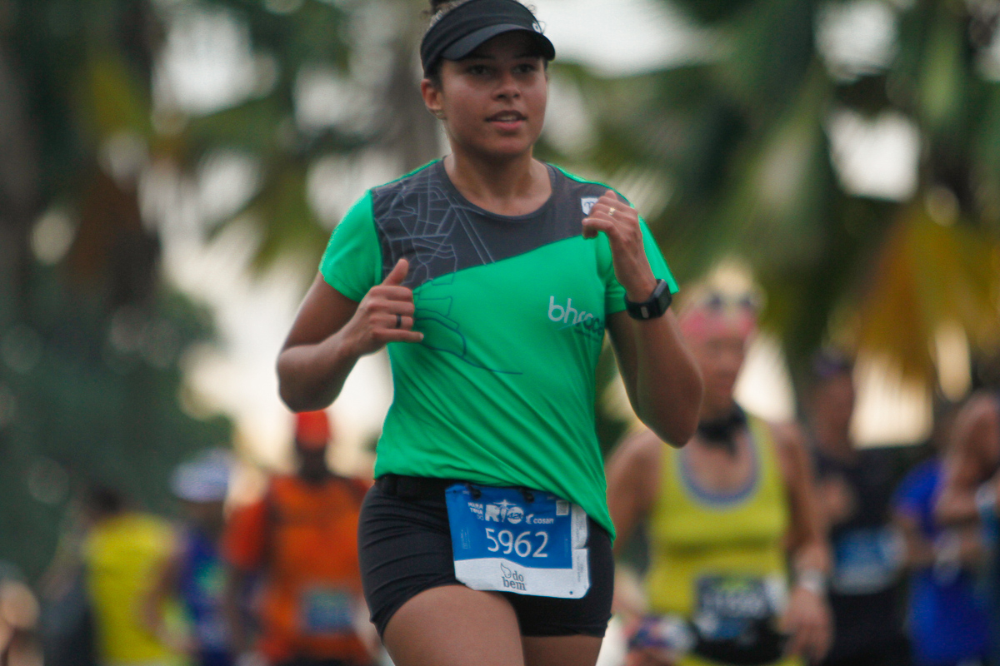

Natalia Macedo

Registro na maratona do Rio de Janeiro - 2019
Sobre a Nat
Brasileira, natural de Coronel Fabriciano e atualmente reside em Belo Horizonte!
Minhas Habilidades:
- Html;
- Fazer mapas;
- Pão de fermentação natural;
- Corrida de rua;
- Bordado em ponto cruz e livre.
Onde me encontrar: